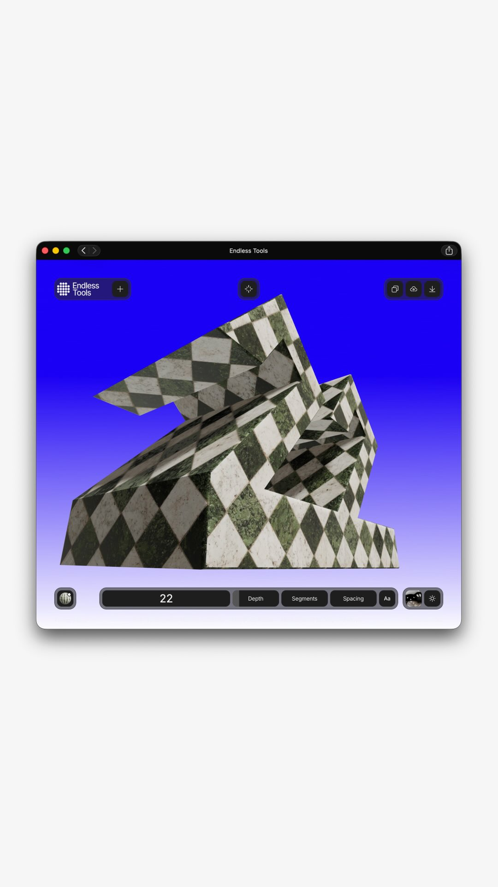
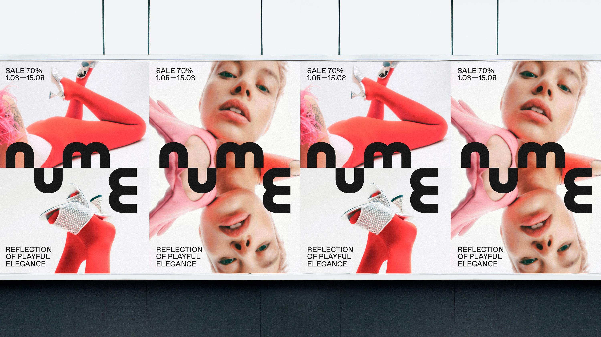
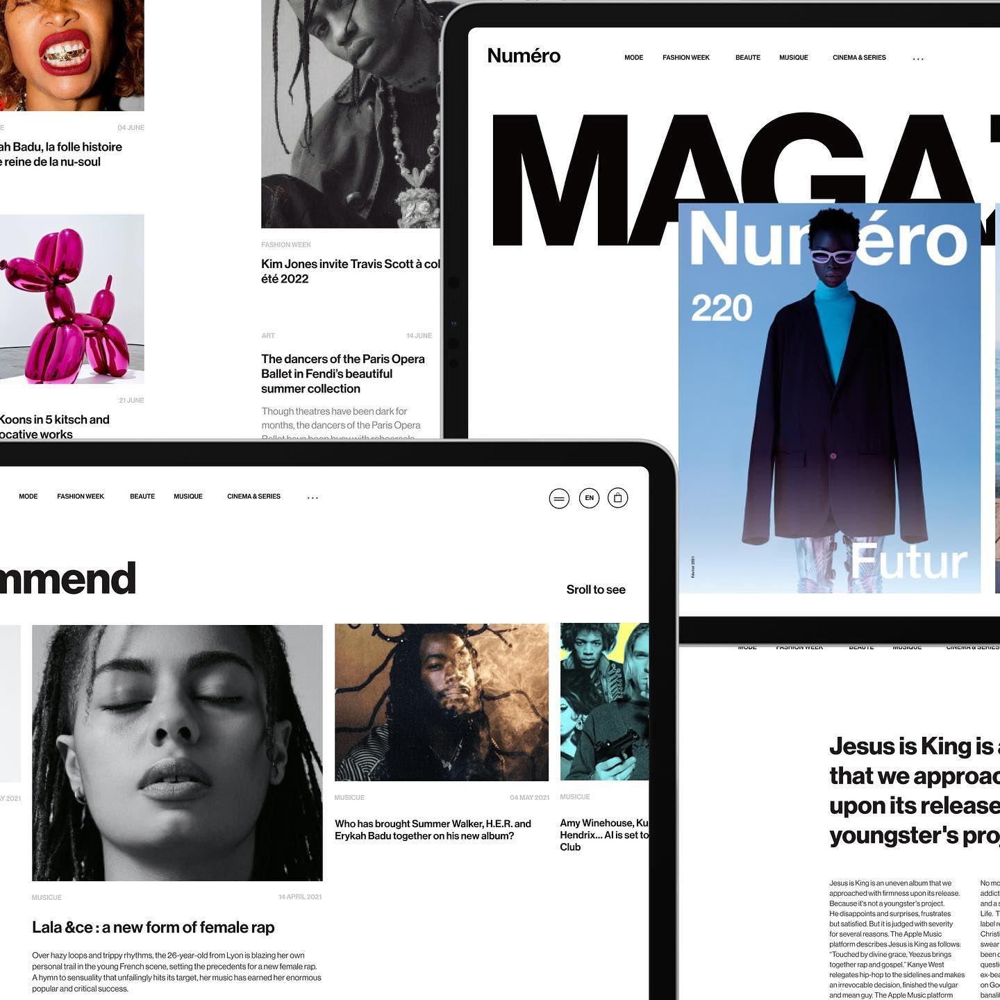
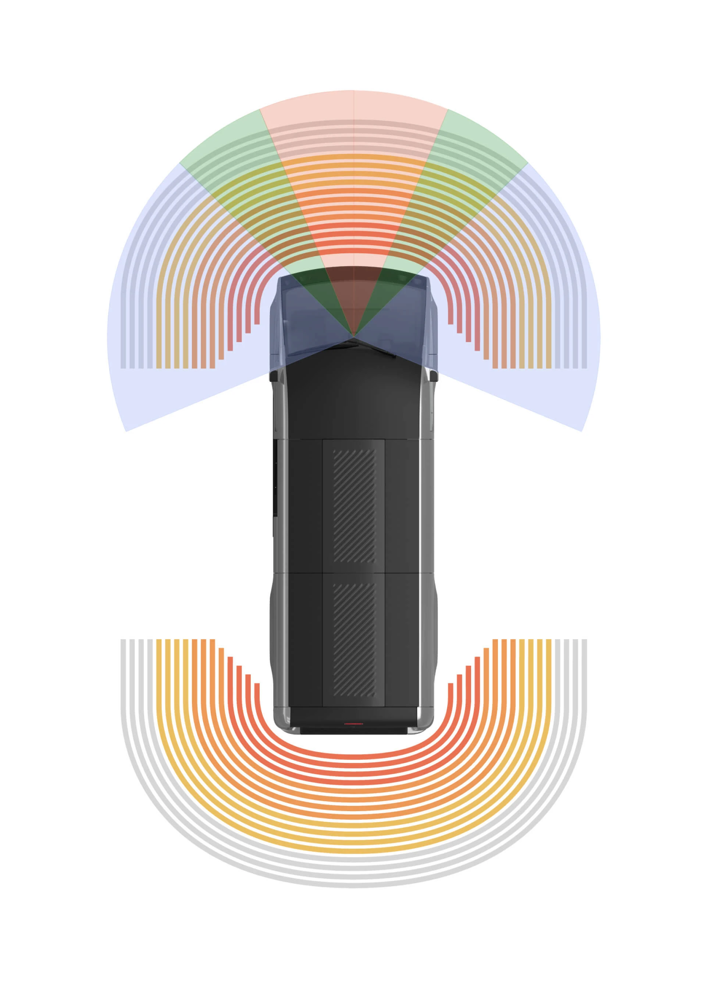
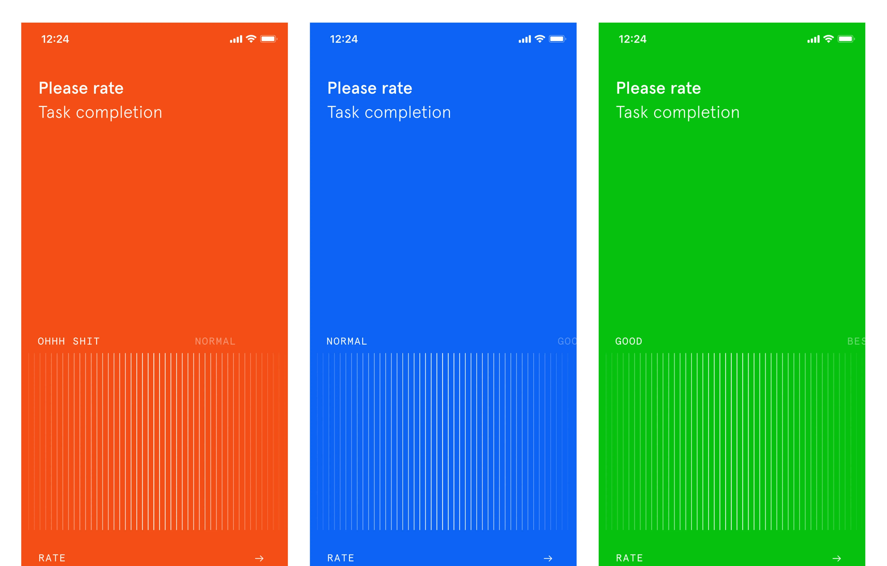
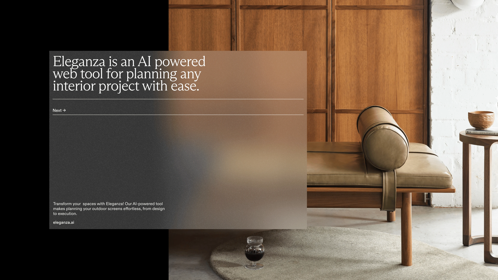

Анастасия делает проекты в двух студиях для западных стартапов и канал «Спрошу кота». Без бизнес-контекста визуал для неё красивый шот, а AI новая краска, не замена руки.
С чего начинается дизайн-культура, для тебя как для арт-директора и основателя?
Я с одной стороны арт-директор, с другой — основатель студии, и сама была дизайнером, и при этом из бизнеса. Это накладывает определённый взгляд: для меня в любом проекте очень важна сторона бизнеса.
Дизайн-культура — это про понимание широкого контекста, в котором будет жить вообще этот дизайн. Если это брендинг, который мы создаём, для кого он предназначен, какие у него цели, что мы хотим этим дизайном сказать.
Контекст — это то, что я часто вижу, что дизайнеры недооценивают. Контекст в широком понимании очень сильно зависит от продукта: даже в каком состоянии человек делает то, для чего ему нужен этот сайт, или этот продукт. Понимание и сбор контекста, и контекста аудитории, и контекста бизнеса — мне кажется, очень важная часть культуры дизайнера.
«Контекст — это то, что дизайнеры недооценивают».
— Анастасия Сычева
Это про самого дизайнера. А что насчёт команды, есть ли у вас ритуалы внутри студии?
Я считаю, дизайнерам очень важно получать удовольствие от работы. Это не сотрудники у станка, на заводе. Для всех хороших дизайнеров дизайн — это способ мышления, жизнь. Это намного больше, чем просто профессия и место, куда пришёл работать на восемь часов. И с таким пониманием нужно относиться к команде.
За пределами работы у нас, например, есть встреча по вторникам, где мы обсуждаем любые интересующие нас темы, которые как-то касаются дизайна, а могут даже не касаться: искусство, кино, книги, архитектура, еда. В общем, очень-очень много тем мы обсуждали, и одежду, и дизайн коктейля. Всё, что существует в мире, мы это делаем или в формате доклада, когда каждый участник готовит свой доклад, или проводим какие-то воркшопы. Нарисовать букву так, как будто бы она представляла какой-то бренд с определённым характером. Мы всегда делаем что-то интересное вместе, помимо работы.


Расскажи про свой путь. Мне важно услышать, как ты пришла в профессию и через какие повороты двигалась.
Я пришла в дизайн очень необычным путём. Мне всегда дизайнеры казались какими-то magic people, волшебниками, которые совершенно непонятно как это делают, потому что я была на стороне заказчика. У меня образование менеджмента, я строила карьеру: последняя моя должность перед тем, как я ушла в дизайн, управляющая Санкт-Петербургской школы телевидения в Челябинске. Мы открывали филиал, и я руководила открытием, наймом, запуском. И там в том числе были курсы по веб-дизайну. Мне был просто интерес посмотреть, как эти дизайнеры дизайн делают.
Мне казалось, что кнопки растут на дереве. У меня даже в голове не было, что это вообще-то кто-то рисует прямоугольник и вставляет туда слово. Когда я пошла на эти курсы, я была в диком восторге: мне очень понравилось, как это всё работает. Поняла, что вот это составляющее творчество, которого не было в моей жизни, мне очень сильно не хватало.
Момент, когда я прошла эти курсы, совпал с тем, что я ушла в декрет. И в декрет я начала просто с фриланса. Написала во «ВКонтакте», что теперь делаю сайты кому надо. Ко мне пришли первые знакомые, и у меня очень классно начало получаться, потому что я прекрасно понимала, как работает бизнес. Фрилансеры часто этого не понимают, и поэтому им сложно общаться с заказчиками.
«Мне казалось, что кнопки растут на дереве».
— Анастасия Сычева

И как из фриланса получилась студия?
В какой-то момент мне стало скучно сидеть дома одной и делать сайты. У меня всегда была команда, которой я руководила. Я начала приглашать других дизайнеров, мы начали работать в Челябинске. И столкнулась с реальностью малого бизнеса, со всеми граблями, по которым ходят фрилансеры: заказчик ничего не понимает в дизайне, странные требования, не платит или тянет с оплатой.
Мне было очень интересно, как это устроено в других студиях. Я запустила проект на Ютубе. Пять или шесть видео хватило, где брала интервью у фаундеров других студий и разговаривала с ними про процессы. Канал назывался «Спрошу кота», потому что доходило до смешного: клиент говорит «я спрошу у своей жены, нравится ей этот цвет или нет». Я довела это до максимума и назвала канал «Спрошу кота». Типа, мой кот сказал, что этот шрифт мне подходит.
В какой-то момент я наткнулась на школу Y Combinator, американский акселератор. Начала смотреть и поняла: это просто те люди, с которыми я хочу работать. Американские фаундеры технологических стартапов. С того момента я начала преднаправленно делать действия, чтобы выйти на этот рынок. Сейчас у нас нет российских клиентов, мы полностью закрыли российское юрлицо и работаем только с Америкой и Англией.
Какие практики или паттерны помогают тебе сейчас в роли арт-директора и фаундера?
Я всегда стараюсь следовать за своим интересом. Делать то, на что у меня сейчас есть эмоциональный отклик: соглашаться на такие проекты, нанимать таких людей, выбирать каналы продвижения, которые мне интересны. Может быть, это какие-то личные особенности, но я не могу работать, когда у меня день забит задачами и встречами, когда я постоянно отдаю своё внимание кому-то другому. Мне очень важно иметь время, чтобы что-то изучить, подумать, что нам делать дальше. Это про исследование своего интереса, а не про какую-то суперпродуктивность и эффективность дня.
Сейчас у меня на столе лежит книга Рика Рубина «Из ничего создавать искусство». Я открываю на рандомной странице утром и читаю эту главу. Мне кажется, очень важно иметь инструменты, которые расширяют твоё сознание, выводят тебя из ежедневной рутины, чтобы взгляд перемещать куда-то наверх или сбоку. Не туда, куда мы каждый день привыкли смотреть.
«Я не могу работать, когда у меня день забит задачами и встречами».
— Анастасия Сычева



Как у вас устроена работа в брендинге, на что вы опираетесь в первую очередь?
В брендинге то, на что мы опираемся в первую очередь, мы пытаемся понять, в чём ценность этого продукта. В чём одна конкретная идея, которая попадает в основную целевую аудиторию и будет откликаться.
Один из недавних проектов: ребята строят помощника, который помогает подготовиться к интервью. Проходить, строить своё резюме, рассказ о себе с опорой на требования вакансии, но так, чтобы это было органично твоему пути, твоей ценности. Об этом продукте можно рассказывать совершенно по-разному, путей очень много. Но когда мы общаемся с фаундером, мы пытаемся увидеть вот эту вот корр, эту одну идею, которая отражает суть продукта и будет откликаться аудитории.
Для этого продукта корр-идея в итоге звучит как just a matter of practice, это просто вопрос практики. Дальше она работает как теглайн: «Big interview — just a matter of practice», «Серьёзный разговор о повышении зарплаты — just a matter of practice». Идея в том, что всему можно научиться, всё можно практиковать. Практика поможет пройти любой сложный разговор.
Когда мы работаем с брендингом, основная ценность, которую мы ищем, это идея, лежащая в основе продукта. Её мы будем транслировать в первую очередь.
Что для вас, как для команды, качество и хороший дизайн? Можно ли его как-то зафиксировать?
Я думаю, никакого качества, никакого хорошего дизайна нет. Это всё очень субъективно, таких объективных понятий не существует. Мы можем считать, что проект прошёл успешно, когда стороны довольны результатом: заказчик доволен тем, что получилось, мы довольны тем, что сделали.
В дизайне всегда есть три стороны — студия, заказчик и пользователь, который потом голосует рублём. Они равноценны?
В итоге всегда решает третья сторона, которая голосует рублём, долларом, валютой. Но третью сторону спрашивать нельзя, нравится вам это или нет. Поэтому в процессе работы первые две стороны важны. Если возникает конфликт между видением заказчика и видением студии, выбирается видение заказчика. Так как он за это заплатил деньги, это его бизнес, это его видение.
«В итоге всегда решает третья сторона, которая голосует рублём. Но её спрашивать нельзя».
— Анастасия Сычева
У дизайнера сейчас огромный инструментарий — от ИИ для текста до полной отрисовки сайтов по промту. Где, по-твоему, заканчивается крафт и начинаются технологии?
Я не вижу тут противопоставления. Это инструменты. Какие инструменты сейчас доступнее и эффективнее для текущей задачи — те и применяются. Конфликта нет.
В чём может быть конфликт потенциальный, если безответственно относиться к применению инструмента, может получиться безэмоциональный дизайн. Дизайн, который не вызывает у конечного пользователя эмоций, отклика, потому что сделан на коленке. Или потому что AI пока не научился на сто процентов отражать тот вижен, который ты в него закладываешь. Ты делаешь поправку, подходишь к процессу итеративно: какие-то штуки получаешь, докручиваешь. Используешь AI, чтобы быстро проверить, а потом идёшь к специалисту, который точно умеет с этим работать. Делаешь концепт, там AI уместно. Двигаешься в сторону продакшена, ту же 3D-графику докручиваешь с человеком, который хорошо владеет 3D-программами и может сделать на высоком уровне.
В целом весь разговор, про инструменты. Мы выбираем то, что сейчас подходит. Если у нас ограниченный бюджет и мы можем создать серию иллюстраций с AI в нужных временных и денежных рамках, мы это делаем с AI. Если не можем, рисуем сами или нанимаем иллюстратора. То же с текстами: если AI не помогает или мы в чём-то не уверены, нанимаем копирайтера.
Чаще всего на старте проекта мы понимаем, что планируем делать. Например, мы делали логотип сложный, по сути, зашитый в логотип иллюстрации, и сразу понимали, что точно не будем это делать с AI. Пригласили иллюстратора. Иногда в ходе проекта приходит понимание, что всё-таки нужен специалист.
Выбор инструмента здесь точно так же, как выбор цвета. Я бы смотрела на это как на инструмент, который выбирается в зависимости от контекста — от бюджета, времени, того, насколько сложная задача. Однозначного ответа, что в таких проектах мы выбираем это, в других то — нет.
«Выбор инструмента — это точно так же, как выбор цвета».
— Анастасия Сычева
Дополнительно
- —
О практике
Анастасия Сычева — арт-директор и основатель двух дизайн-студий, работающих с американскими и британскими стартапами; ютуб-канал «Спрошу кота».